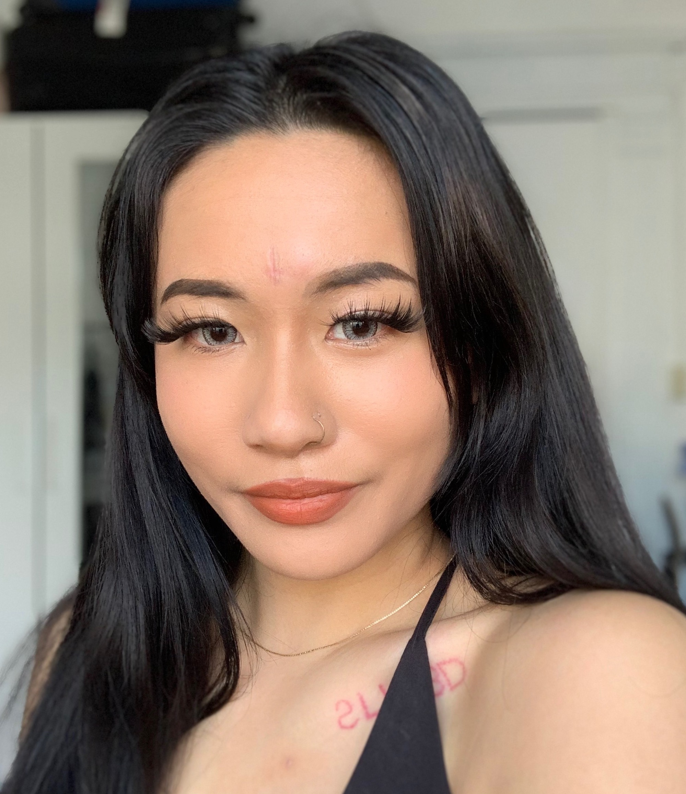

I'm a fourth year student at the University of California, Berkeley majoring in Data Science.
I love software engineering, working out, and my hamster, Hamsterdam.
about me

Hi! My name is Violex and I am a fourth year student majoring in Data Science at the University
of California Berkeley. I am based out of the Bay Area and am originally from Houston, Texas.
I didn't always plan on majoring in Data Science or doing anything close to tech; I entered
Berkeley intending on leaving with a degree in biochemistry and then heading to medical school,
but life doesn't always work out that way; turns out you won't make it very far in biochemistry
if you hate chemistry. Luckily, Berkeley came out with a Data Science major my second year and
I haven't looked back since. Although chemistry didn't come naturally to me, programming has and
I'm excited to make a career from it. All in all, I'm incredibly thankful to have found an area
of study that I not only understand but am passionate about as well.
In my free time, you can find me working on personal projects, both art and tech, working out,
cooking, and playing with my hamster. Please feel free to reach out if you have any questions
and I hope you stay a bit longer to take a look around!
experience
coursework